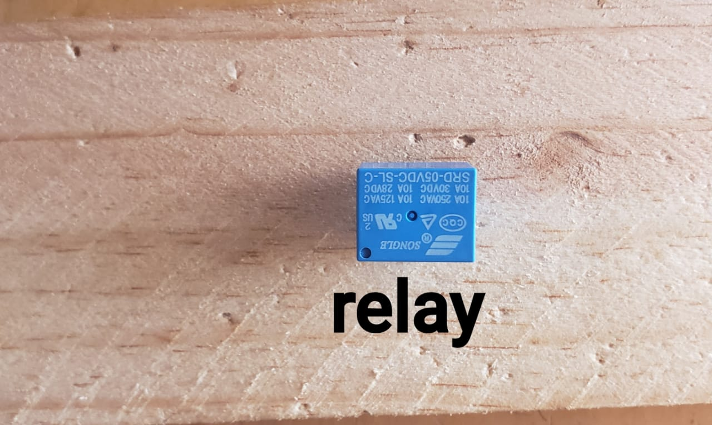

Kevin NIYODUSENGA
Denyse MANISHIMWE

Automated and Efficient Watering Solution
Project Title: Smart Irrigation System
Developers:NIYODUSENGA Kevin & MANISHIMWE Denyse
Institution:VTLABS GROUP
Supervisor:Dushiminana Alexandre
Date:../../2025
.jpg)
A Smart Irrigation System is a modern way of watering plants automatically. Instead of depending on people to check the soil every day, this system uses simple sensors to know when the soil is dry and needs water. When the soil becomes too dry, the system turns on a small water pump to water the plants. After enough water is supplied, the pump goes off by itself. This system also shows information like soil wetness, temperature, and humidity on a small screen, helping users understand the condition of their plants. It can even send this information to a phone or computer, allowing the user to monitor the farm from anywhere. By saving time and reducing water waste, this smart irrigation system helps farmers and gardeners take care of their crops more easily, efficiently, and in an environmentally friendly way.
This project presents a Smart Irrigation System designed to improve water management in agriculture. It utilizes moisture sensors, microcontrollers, and automated water pumps to supply water only when necessary. The goal is to minimize water wastage, reduce human effort, and improve crop health through efficient irrigation practices.
The system works on the principle of feedback control. Soil moisture sensors send analog signals to the microcontroller. Based on the sensor input, the controller decides whether to turn on or off the water pump. An LCD display or web interface can show real-time data such as soil moisture levels and system status. At the sametime, temperature and humidity are measured by DHT11, and all data is displayed local on the LCD and online on adafruit IO .

This SMART IRRIGATION SYSTEM BLOCK DIAGRAM shows a plan for an automatic plant watering system called "SIS." Think of it as a smart irrigation system. The whole system is powered by electricity, which is what the "POWER" block is for. The system uses two sensors to understand its environment: a "Soil Moisture Sensor" acts like a finger to check if the soil is dry, and a "DHT11" sensor acts like a tiny weather station to check the air temperature and humidity. All the information from these sensors is sent to the "ESP32," which is the brain of the operation. The brain makes all the decisions. If it decides the plants need water, it sends a command to the "Relay Circuit." You can think of the relay as a strong arm; the brain is smart but can't handle high power, so the relay does the heavy lifting of safely turning on the "Water Pump." Finally, the water pump is what actually waters the plants. So, in short, the system senses, thinks, and then acts completely on its own to keep plants perfectly watered.
Code used before put in Iot
#include <Wire.h>
#include <LiquidCrystal_I2C.h>
#include <DHT11.h>
#define DHTPIN 2
#define SOIL_SENSOR_PIN 34
#define PUMP_PIN 27
#define BUZZER_PIN 12
#define GREEN_LED 13
int soilThresholdPercent = 40;
int tempThreshold = 30;
LiquidCrystal_I2C lcd(0x27, 16, 2);
DHT11 dht11(DHTPIN);
void setup() {
Serial.begin(115200);
pinMode(SOIL_SENSOR_PIN, INPUT);
pinMode(PUMP_PIN, OUTPUT);
pinMode(BUZZER_PIN, OUTPUT);
pinMode(GREEN_LED, OUTPUT);
digitalWrite(PUMP_PIN, LOW);
digitalWrite(BUZZER_PIN, LOW);
digitalWrite(GREEN_LED, HIGH);
lcd.init();
lcd.backlight();
lcd.clear();
lcd.setCursor(0, 0);
lcd.print("SMART IRRIGATION");
lcd.setCursor(0, 1);
lcd.print("SYSTEM STARTING");
delay(2000);
lcd.clear();
Serial.println("SYSTEM READY...");
}
void loop() {
float temperature = dht11.readTemperature();
float humidity = dht11.readHumidity();
int rawSoil = analogRead(SOIL_SENSOR_PIN);
int soilPercent = map(rawSoil, 4095, 0, 0, 100);
Serial.print("Soil Moisture: ");
Serial.print(soilPercent);
Serial.println(" %");
Serial.print("Temperature: ");
Serial.print(temperature);
Serial.println(" *C");
Serial.print("Humidity: ");
Serial.print(humidity);
Serial.println(" %");
lcd.setCursor(0, 0);
lcd.print("Soil:");
lcd.print(soilPercent);
lcd.print("% ");
lcd.setCursor(0, 1);
lcd.print("T:");
lcd.print(temperature);
lcd.print("C ");
lcd.print("H:");
lcd.print(humidity);
lcd.print("%");
if (soilPercent <= soilThresholdPercent) {
digitalWrite(PUMP_PIN, HIGH);
digitalWrite(BUZZER_PIN, HIGH);
lcd.setCursor(12, 0);
lcd.print("ON ");
Serial.println("PUMP: ON (Soil Dry)");
} else {
digitalWrite(PUMP_PIN, LOW);
digitalWrite(BUZZER_PIN, LOW);
lcd.setCursor(12, 0);
lcd.print("OFF");
Serial.println("PUMP: OFF (Soil Wet)");
}
if (temperature <= tempThreshold) {
digitalWrite(GREEN_LED, HIGH);
} else {
digitalWrite(GREEN_LED, LOW);
}
Serial.println("-----------------------------------");
delay(1000);
}
our circuit in proteus and connect them

The system consists of sensors embedded in the soil, which monitor moisture levels in real time. These sensors are connected to a microcontroller (such as Arduino or ESP32), which processes the data. When the moisture level falls below a certain threshold, the system automatically activates a water pump to irrigate the crops.
Below are some images of the running project and components used:
IMAGES OF COMPONENTS USED IN OUR PROJECT
solar panel used

this solar panel used during our system located in swamp if our system loss power solar panel start to charge system until the system full charge
lcd used
.jpeg)
this lcd used to display each information in system
ESP32 USED
.jpeg)
this esp32 is microcontroller of system
WATER PUMP USED

this water pump used for pumping water from water source to the soil
RELAY USED
Relays are used to control a circuit by an independent low-power signal and to control several circuits by one signal and switch our pump
DHT11 USED

This DHT-11 sensor functions as an input sensor to read the temperature and humidity values in the plant
SOIL MOISTURE USED

This soil moisture help to maintain optimal conditions for plant growth and ecosystem functioning
TRANSISTOR USED
.jpg)
This transistor is used for switching, where it can turn a current on or off, and amplification
RESISTOR USED

This resistor is used to limit the current flow in an electronic circuit
LED AND BUZZER USED

This LED and buzzer are used for indicating the status of the system
The code we used to upload our project to adafruit io
#include <WiFi.h>
#include <WiFiClient.h>
#include <LiquidCrystal_I2C.h>
#include "Adafruit_MQTT.h"
#include "Adafruit_MQTT_Client.h"
#include <DHT11.h>
DHT11 dht11(32);
int sensor =34;
int pump=27;
int buzzer=12;
int green=13;
int threshold=40;
int threshod=1000;
LiquidCrystal_I2C lcd(0x27, 16, 2);
#define WLAN_SSID "**********"
#define WLAN_PASS "**********"
#define AIO_SERVER "io.adafruit.com"
#define AIO_SERVERPORT 1883
#define AIO_USERNAME "**********"
#define AIO_KEY "**********"
WiFiClient client;
Adafruit_MQTT_Client mqtt(&client, AIO_SERVER, AIO_SERVERPORT, AIO_USERNAME, AIO_KEY);
Adafruit_MQTT_Publish temp = Adafruit_MQTT_Publish(&mqtt, AIO_USERNAME "/feeds/temperature");
Adafruit_MQTT_Publish hum = Adafruit_MQTT_Publish(&mqtt, AIO_USERNAME "/feeds/humidity");
Adafruit_MQTT_Publish moisturesensor = Adafruit_MQTT_Publish(&mqtt, AIO_USERNAME "/feeds/soil_moisture");
Adafruit_MQTT_Subscribe onoffpump = Adafruit_MQTT_Subscribe(&mqtt, AIO_USERNAME "/feeds/pump");
void MQTT_connect();
void setup() {
Serial.begin(115200);
delay(10);
pinMode(green,OUTPUT);
pinMode(buzzer,OUTPUT);
pinMode(pump,OUTPUT);
pinMode(sensor,INPUT);
digitalWrite(green,HIGH);
digitalWrite(buzzer,LOW);
digitalWrite(pump,LOW);
lcd.init();
lcd.backlight();
lcd.clear();
lcd.setCursor(0, 0);
lcd.print("SMART IRRIGATION");
lcd.setCursor(0, 1);
lcd.print("SYSTEM STARTING");
delay(2000);
lcd.clear();
Serial.print("SYSTEM IRRIGATION SYSTEM ");
Serial.print("Connecting to ");
Serial.println(WLAN_SSID);
WiFi.begin(WLAN_SSID, WLAN_PASS);
while (WiFi.status() != WL_CONNECTED) {
delay(500);
Serial.print(".");
}
Serial.println("\nWiFi connected");
Serial.print("IP address: ");
Serial.println(WiFi.localIP());
mqtt.subscribe(&onoffpump);
}
void loop() {
MQTT_connect();
Adafruit_MQTT_Subscribe *subscription;
while ((subscription = mqtt.readSubscription(500))) {
if (subscription == &onoffpump) {
Serial.print(F("Got1: "));
Serial.println((char *)onoffpump.lastread);
char *value = (char *)onoffpump.lastread;
String message = String(value);
message.trim();
if (message == "1") {
digitalWrite(pump, HIGH);
}
if (message == "0") {
digitalWrite(pump, LOW);
}
}
}
int temperature= dht11.readTemperature();
int humidity= dht11.readHumidity();
int moisturevalue=analogRead(sensor);
int moisturePercent= map(moisturevalue, 4095, 1700, 10, 100);
int result= dht11.readTemperatureHumidity(temperature, humidity);
lcd.setCursor(0, 0);
lcd.print("Soil:");
lcd.print(moisturePercent);
lcd.print("% ");
lcd.setCursor(0, 1);
lcd.print("T:");
lcd.print(temperature);
lcd.print("C ");
lcd.print("H:");
lcd.print(humidity);
lcd.print("%");
Serial.print(F("\nSending Humidity val "));
Serial.print(humidity);
if (!hum.publish((float)humidity)) {
Serial.println(F(" -> Failed"));
} else {
Serial.println(F(" -> OK!"));
}
Serial.print(F("Sending Temperature val "));
Serial.print(temperature);
if (!temp.publish((float)temperature)) {
Serial.println(F(" -> Failed"));
} else {
Serial.println(F(" -> OK!"));
}
Serial.print(moisturePercent);
if (!moisturesensor.publish((float)moisturePercent)){
Serial.println(F(" -> Failed"));
Serial.println("WATERING");
}
else {
Serial.println(F(" -> OK!"));
}
Serial.print(F("open pump "));
if(moisturePercent < threshold){
digitalWrite(pump,HIGH);
digitalWrite(buzzer,HIGH);
digitalWrite(green,LOW);
lcd.setCursor(12, 0);
lcd.print("ON ");
Serial.println("PUMP: ON (Soil Dry)");
}
else{
Serial.print(F("CLose pump "));
digitalWrite(buzzer,LOW);
digitalWrite(pump,LOW);
digitalWrite(green,HIGH);
lcd.setCursor(12, 0);
lcd.print("OFF");
Serial.println("PUMP: OFF (Soil Wet)");
}
Serial.println("-----------------------------------");
delay(5000);
}
void MQTT_connect() {
int8_t ret;
if (mqtt.connected()) {
return;
}
Serial.print("Connecting to MQTT... ");
uint8_t retries = 3;
while ((ret = mqtt.connect()) != 0) {
Serial.println(mqtt.connectErrorString(ret));
Serial.println("Retrying MQTT connection in 5 seconds...");
mqtt.disconnect();
delay(5000);
retries--;
if (retries == 0) {
while (1);
}
}
Serial.println("MQTT Connected!");
}
After sending this code to the esp32 serial monitor, it showed us this information. We checked that it matches what we told the code to do. We also checked that it matches what the LCD is displaying.

LCD display shows the same information as the serial monitor.

The project can be powered using a battery or solar panel, making it suitable for remote agricultural areas. Future improvements could include IoT integration, smartphone control, and data logging.